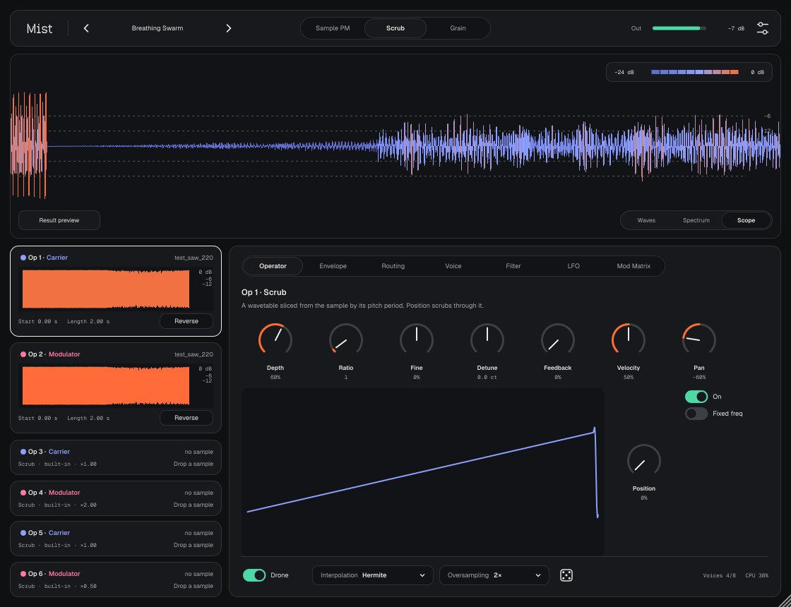
Mist — синтезатор на фазовой модуляции (FM), где вместо синусов звучат ваши семплы.
Шесть операторов. Каждый играет семпл или встроенную волну. Операторы соединяются в цепочку: модулятор раскачивает несущую, несущая идёт на выход. Если в модулятор положить запись дождя, а в несущую — голос, голос начнёт «дрожать» в ритме дождя. Так получаются дроны, пэды, колокола, шевелящиеся текстуры и прочий саунд-дизайн.
Нужен Mac (Apple Silicon или Intel) с macOS 11 или новее. Плагин не подписан сертификатом Apple, поэтому ставится скриптом, который снимает карантин.
Нужен установленный gh (GitHub CLI). Команда скачивает последний релиз, распаковывает и устанавливает:
cd ~/Downloads && rm -rf Mist-macOS Mist-macOS.zip && gh release download -R controloptioncommand/Mist-vst -p Mist-macOS.zip && unzip -q Mist-macOS.zip -d Mist-macOS && bash Mist-macOS/install-mac.sh
bash ~/Downloads/Mist-macOS/install-mac.sh. Скрипт кладёт Mist.vst3 и Mist.component в ~/Library/Audio/Plug-Ins.Обновление — та же команда: новая версия заменит старую. Проекты и пресеты при обновлении не трогаются.
| Зона | Что там |
|---|---|
| Тулбар | Логотип Mist (клик — страница About), пресет ‹ имя ›, режим выбранного оператора, индикатор Out, кнопка настроек. |
| Главный вид | То, что звучит на выходе: Scope, Waves или Spectrum. Переключатель снизу справа. |
| Колонка Op 1–6 | Карточки операторов с семплами. Клик выбирает оператор, панель справа показывает его настройки. |
| Панель | Вкладки Operator, Envelope, Routing, Voice, Filter, LFO, Mod Matrix. |
| Подвал | Drone, Interpolation, Oversampling, кубик, счётчики Voices и CPU. |
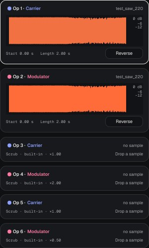
Оператор — это один источник звука с собственной высотой, громкостью и огибающей. У каждого своя карточка.
Выбранная карточка обведена рамкой.
Подходят WAV, AIFF, FLAC, MP3 и другие форматы, которые понимает macOS. Высота тона семпла определяется автоматически и записывается в Root.
Оператор без семпла играет встроенную таблицу из 8 форм. Ручка Position плавно проходит по ним: Sine → Sine+Oct → Tri → Square → Saw → Pulse → Narrow → Formant. Так Mist работает как обычный FM-синт.
Режим задаёт, как оператор читает свой семпл. Выбирается в тулбаре или правым кликом по карточке.
| Режим | Как звучит | Ручки режима |
|---|---|---|
| Sample PM | Семпл играет как есть, а модуляторы сдвигают точку чтения в нём, сэмпл за сэмплом. Живые, «грязные», шевелящиеся текстуры. Высота следует за клавишами относительно Root. | Start, Loop Start, Loop End, XFade, Root, режим петли, Keytrack |
| Scrub | Из семпла нарезается wavetable на 64 кадра по найденной высоте тона. Чистый тон без алиасинга. Хорош для пэдов и чистого FM. | Position |
| Grain | Перекрывающиеся зёрна из выбранного места семпла. Модуляторы гнут каждое зерно. Облака, шумные дроны, размытые пэды. | Position, Size, Density, Spray, Root, Keytrack |
Маркеры start и петли можно двигать мышью прямо на графике во вкладке Operator.
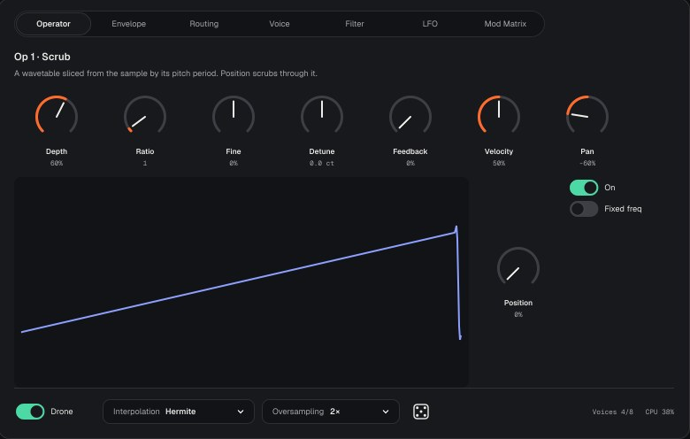
| Контрол | Что делает | Диапазон |
|---|---|---|
| Depth | Громкость оператора. У несущей — громкость на выходе, у модулятора — сила модуляции. | 0–100% |
| Ratio | Множитель частоты относительно ноты. 1 — та же нота, 2 — октава выше, 0.5 — октава ниже. Целые отношения звучат гармонично, дальние (7, 11, 13) — металлически. | 0.5, 1–32 |
| Fine | Тонкая подстройка отношения вниз и вверх. Нецелые отношения — путь к колоколам. | −50…+50% |
| Detune | Расстройка в центах. Небольшая расстройка оживляет звук биениями. | ±100 ct |
| Feedback | Оператор модулирует сам себя. Синус превращается в пилу, а потом в шум. | 0–100% |
| Velocity | Насколько сила удара по клавише влияет на громкость оператора. | 0–100% |
| Pan | Положение оператора в стерео. | −100…+100% |
| Position | Scrub и Grain: место в wavetable или семпле. | 0–100% |
| Start | Sample PM: откуда начинается проигрывание. | 0–100% |
| Root | Нота, на которой семпл звучит в исходной высоте. Ставится автоматически. | C-1…G9 |
| Freq | Появляется при Fixed freq: частота в герцах, не зависит от клавиш. | 0.1 Hz – 10 kHz |
| Out | Появляется только в режиме Matrix: сколько оператора идёт на выход. | 0–100% |
| On | Оператор включён (то же, что цветная точка на карточке). | on / off |
| Fixed freq | Частота не следует за нотой. Полезно для шумовых и ударных призвуков. | on / off |
| Keytrack | Sample PM и Grain: семпл меняет высоту вслед за клавишами. Выключено — всегда звучит в исходной высоте. | on / off |
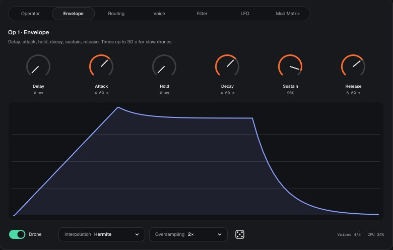
У каждого оператора своя огибающая громкости. Для модулятора это значит, что яркость меняется во времени: например, быстрый Decay модулятора даёт «удар» в начале ноты.
| Стадия | Что делает | Диапазон |
|---|---|---|
| Delay | Пауза перед началом атаки. | 0–20 s |
| Attack | Нарастание до максимума (линейное). | 0–30 s |
| Hold | Сколько держится максимум. | 0–20 s |
| Decay | Спад до уровня Sustain. | 0–30 s |
| Sustain | Уровень, пока клавиша нажата. | 0–100% |
| Release | Затухание после отпускания. | 0–30 s |
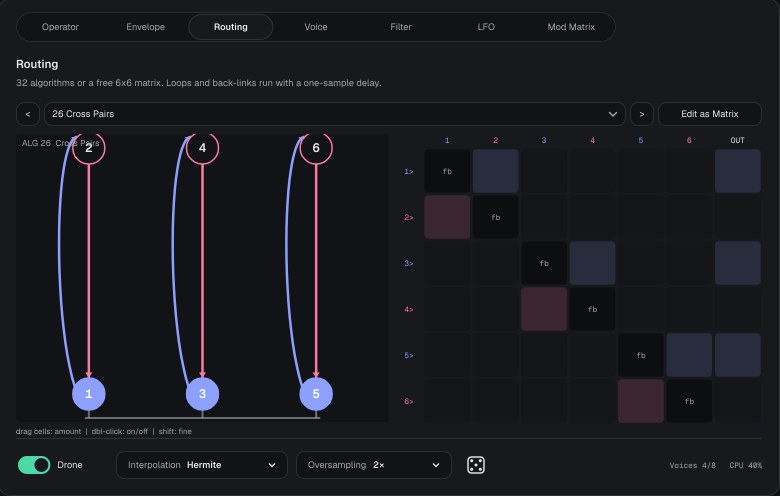
Алгоритм — схема, кто кого модулирует. На схеме стрелка идёт от модулятора к цели. Синие кружки — несущие (идут на выход), розовые — модуляторы. Клик по кружку выбирает оператор.
Строка — кто модулирует, столбец — кого. Столбец OUT — выход. Диагональ fb — feedback оператора.
Запись 6→5 значит «6 модулирует 5». Справа — несущие.
Где не указан выход, несущая — Op 1. С чего начать: 1 Stack — яркий агрессивный звук; 6 Three Pairs — три независимых голоса; 9 Additive — просто смесь шести семплов; 24 Ring 6 и 32 Chaos — дроны и хаос.
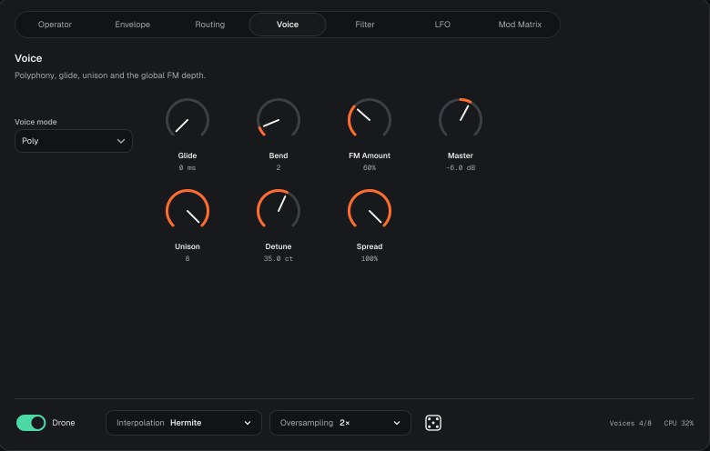
| Параметр | Что делает | Диапазон |
|---|---|---|
| Voice mode | Poly — до 8 нот одновременно. Mono — одна нота, каждая новая перезапускает огибающие. Legato — одна нота, при связной игре огибающие не перезапускаются. | Poly / Mono / Legato |
| Glide | Плавное скольжение высоты между нотами. | 0–5 s |
| Bend | Диапазон колеса pitch bend в полутонах. | 0–24 |
| FM Amount | Общая глубина модуляции для всех операторов сразу. Главная ручка «яркости». | 0–400% |
| Master | Общая громкость. | −48…+6 dB |
| Unison | Сколько копий голоса звучит на каждую ноту. | 1–8 |
| Detune | Расстройка копий unison. | 0–100 ct |
| Spread | Разброс копий unison по стерео. | 0–100% |
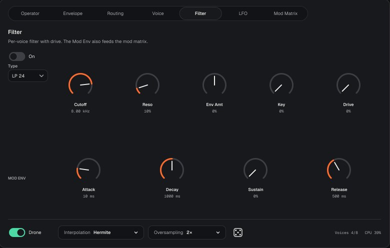
Фильтр стоит после операторов, отдельный на каждый голос. Включается переключателем On.
| Параметр | Что делает | Диапазон |
|---|---|---|
| Type | LP 12 и LP 24 — срезают верх (24 — круче). BP — оставляет полосу. HP — срезает низ. Notch — вырезает полосу. | 5 типов |
| Cutoff | Частота среза. | 20 Hz – 20 kHz |
| Reso | Резонанс — подъём на частоте среза. | 0–100% |
| Env Amt | Насколько Mod Env двигает срез: вверх (плюс) или вниз (минус). | −100…+100% |
| Key | Срез следует за нотой: выше нота — выше срез. | 0–100% |
| Drive | Перегруз на входе фильтра, добавляет плотности. | 0–100% |
Отдельная огибающая ADSR (Attack, Decay, Sustain, Release, времена до 30 s). Она двигает фильтр через Env Amt и доступна как источник в Mod Matrix. Например: Mod Env → FM Amount даёт яркий удар в начале каждой ноты.
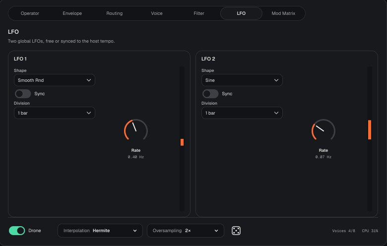
Два общих LFO — медленные колебания, которые двигают параметры. Сами по себе ничего не делают: их нужно назначить в Mod Matrix.
| Параметр | Что делает | Значения |
|---|---|---|
| Shape | Форма: Sine, Triangle, Saw Up, Saw Down, Square, S&H (ступеньки случайных значений), Smooth Rnd (плавный случайный дрейф). | 7 форм |
| Rate | Скорость в герцах, когда Sync выключен. | 0.01–40 Hz |
| Sync | Синхронизация с темпом Ableton. LFO привязан к транспорту: при каждом запуске с одного места он ведёт себя одинаково. | on / off |
| Division | Длина цикла при Sync, включая триоли (T). | 8 bars … 1/32 |
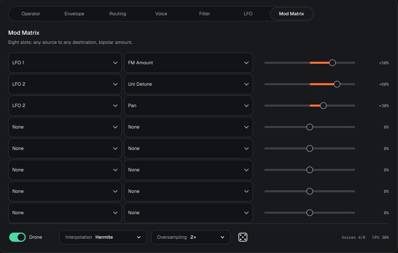
Каждый слот соединяет один источник с одним параметром. Величина двуполярная (−100…+100%): минус двигает параметр в обратную сторону.
| Варианты | |
|---|---|
| Источники | LFO 1, LFO 2, Mod Env, Velocity, Key (высота ноты), Mod Wheel, Aftertouch, Random (новое случайное значение на каждую ноту). |
| Назначения | Pitch, FM Amount, Cutoff, Resonance, Uni Detune, Volume, Pan, а также Level, Pitch, Scan (Position) и Feedback каждого оператора отдельно. |
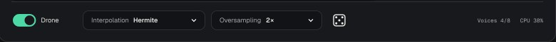
Пока Drone включён, ноты не отпускаются: можно убрать руки с клавиатуры и крутить ручки. Новые ноты добавляются к звучащим. Если нот больше 8, самая старая уступает место. При выключении Drone все ноты, клавиши которых не нажаты, уходят в Release.
Как читаются семплы между точками. Hermite (по умолчанию) — чище и мягче. Linear — чуть легче для процессора и чуть «грязнее» на высоких нотах.
Синтез внутри идёт на частоте в 1, 2 или 4 раза выше проектной. Это убирает алиасинг — металлические призвуки, которые FM даёт на сильной модуляции и высоких нотах. 2× — разумный вариант по умолчанию. 4× чище, но вдвое тяжелее. 1× — самый лёгкий и самый «цифровой».
Случайный патч в безопасных пределах. Меняет:
Не трогает Master, семплы и их настройки (start, петли, reverse, root), режимы операторов, Drone, Oversampling, Interpolation, настройки голосов и Mod Matrix. Несущие получают громкость не ниже 65%, модуляторы — 15–60%, поэтому тишины или перегруза не будет. Понравившийся результат сохраните как пресет: кубик называет патч «Random».
Сколько голосов звучит сейчас из 8 и сколько времени процессора берёт Mist. Если CPU подбирается к 100%, уменьшите Unison или Oversampling.
Показывает то, что выходит из Mist. Переключатель видов — снизу справа (или стрелки ← → с клавиатуры). Цвет везде один: от синего (тихо, −24 dB) к оранжевому (0 dB). Легенда — сверху справа.
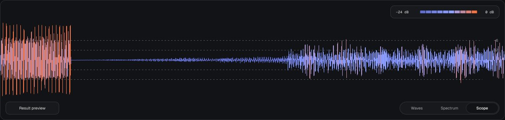
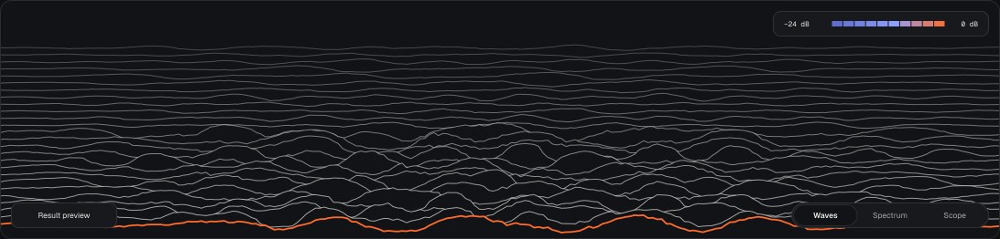
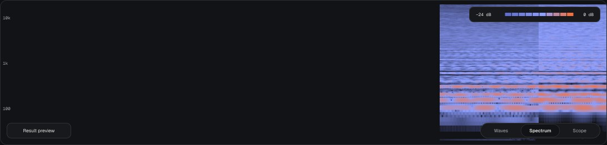
~/Music/Mist/Presets с расширением .mist. Семплы внутри файла, поэтому пресет можно просто переслать.Проект Ableton хранит состояние Mist целиком, вместе с семплами, даже без сохранения пресета.
| Пункт | Что делает |
|---|---|
| Save preset… | Сохранить текущий звук как пресет. |
| Init patch | Сбросить всё в исходное состояние: один оператор, чистый тон. |
| Open presets folder | Открыть папку пресетов в Finder. |
| Delete current preset | Удалить текущий пользовательский пресет. Factory удалить нельзя. |
| Appearance | Match system — тема как в macOS. Oxygen — светлая. Rubber — тёмная. Выбор запоминается. |
| Window size | 75, 100, 125 или 150%. |
| About Mist | Страница About (то же, что клик по логотипу). |
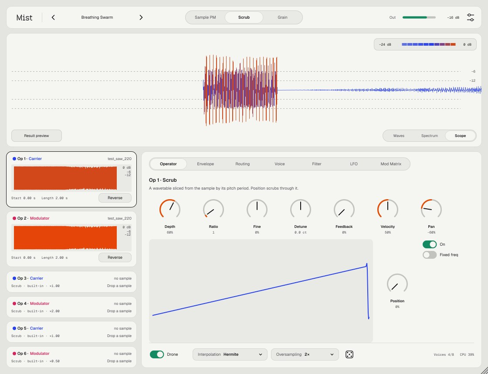
Отправные точки. Значения примерные — крутите на слух.
| Вопрос | Ответ |
|---|---|
| Mist не появился в Ableton | Settings → Plug-Ins: включены «Use VST3 Plug-ins» и «Use Audio Units», затем Rescan. Если не помогло, повторите установку скриптом: он снимает карантин macOS. |
| macOS пишет, что плагин повреждён | Это карантин неподписанного плагина. Запустите install-mac.sh ещё раз. |
| Нет звука | Проверьте, что у несущей (синей) Depth выше нуля и оператор включён (цветная точка). Init patch возвращает рабочее состояние. |
| Звук хрипит или «металлится» | Уменьшите FM Amount или Depth модуляторов, Feedback. Поднимите Oversampling до 2× или 4×. |
| Высоко грузит процессор | Уменьшите Unison, Oversampling, число одновременных нот. Режим Grain с высокой Density тяжелее остальных. |
| Семпл звучит не той нотой | Высота определилась неточно. Поправьте Root на вкладке Operator. |
| Удалил исходный семпл — пропадёт? | Нет. После загрузки семпл хранится в пресете и проекте. |
| Откроются ли старые проекты после обновления? | Да, состояние сохраняется между версиями. Если диапазон какого-то параметра меняется, это будет сказано в патчноуте. |
| Где история изменений | На странице релизов GitHub, у каждой версии свой патчноут. |
Mist v2.1 · made by nnn · написан на C++ и JUCE 8. Шрифты Medeo — SIL Open Font License.
Исходники и релизы: github.com/controloptioncommand/Mist-vst